How to repair the outer panel

-
During operation, please take safety protection measures as required. For details of safety protection, please refer to Sheet metal protection
-
Before operation, please carefully read and observe site safety and vehicle protection. For details, please refer to Site safety and vehicle protection
There are generally two methods to repair the vehicle body's outer panel, namely manual shaping operation and repair with a meson machine .
Repair tools and auxiliary materials
You can learn about the tools and auxiliary materials required for repair of outer panels by clicking on the following link.
-
Repair tools:
-
Auxiliary material: Cavity anti-corrosion wax
Manual shaping
Step I: Damage determination

Mark the damage scope with a colored pen to avoid damage expansion during service; otherwise, the work efficiency may be reduced.
In actual repair, it is necessary to evaluate the damage through visual determination, touch determination, comparison with a ruler, and determination with a profile gauge to formulate a repair plan:
-
Visual determination: It is necessary to select the appropriate light source and observe the deformed area from the front or side angle to determine the extent of damage.
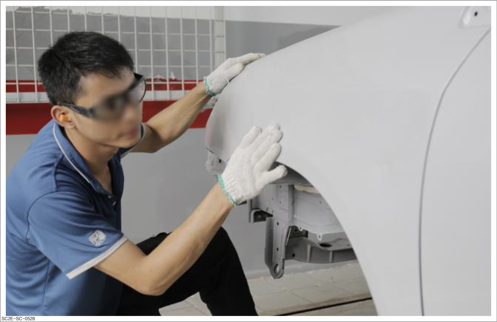
-
Touch determination: Check the intensity change by touching and pressing the panel.
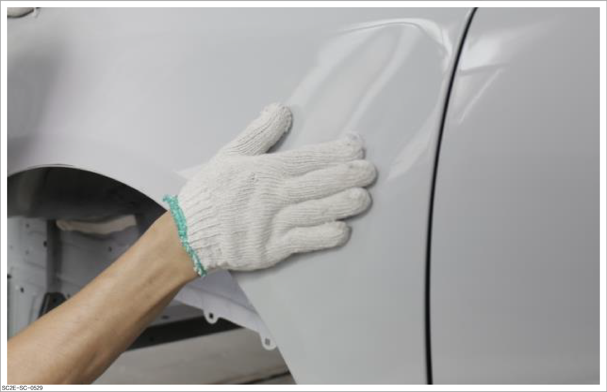
-
Comparison with a ruler: Select a position symmetrical to the damage for comparison, check the damage against the deformed area with a ruler and other tools, and determine the damage by comparing both sides.
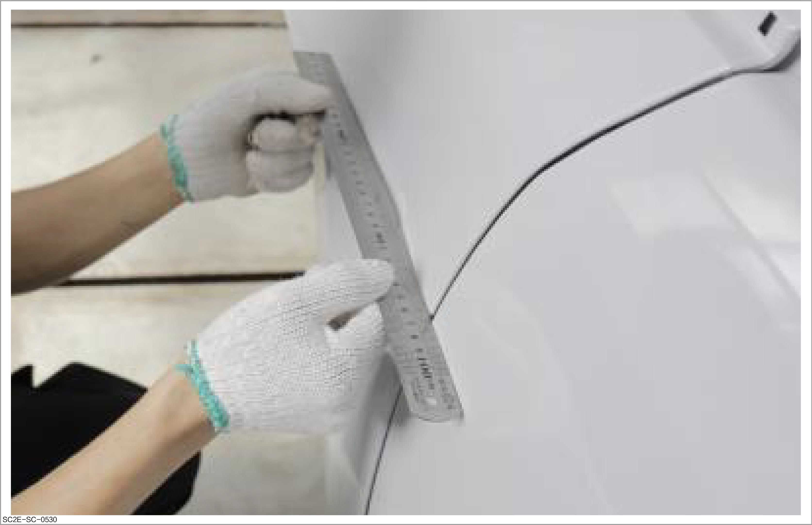
-
Determination with a profile gauge: Set the profile gauge pins against the undeformed panel, so that they have the same profile. Compare the obtained profile and the deformed area with the undeformed position symmetrical to the damage, to determine the deformation.
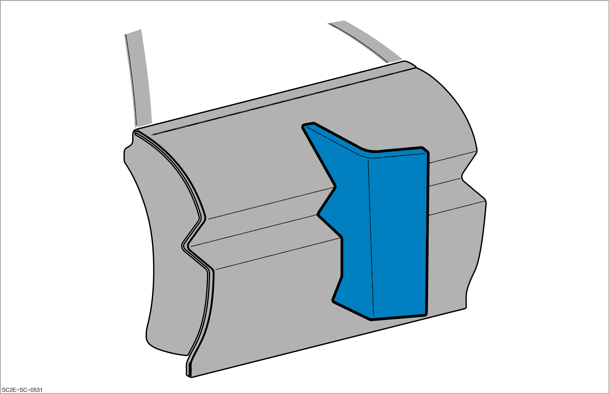
Step II: Shaping
-
Before shaping, use appropriate tools to remove corresponding accessories. Protect the vehicle before removing accessories.
-
If shrinking is required during shaping, disconnect the negative terminal of 12 V battery.
-
Disconnect the negative terminal of 12 V battery when using the meson machine for shaping, to avoid large current passing through the vehicle body and damaging the vehicle's wiring.
-
Hammering and shaping
CautionRepair the panels from inside to outside in principle. That is, repair the inner structural plates first and then the outer plates.
-
Select a sheet metal hammer or crowbar according to the deformed shape for repair.
-
Perform the unaligned hammering on the corresponding part, and then perform the aligned hammering for finishing.
-
Use a crowbar with a small angle to repair the edges and corners.
-
Select a line chisel according to the shape of edges and corners.
-
Use a bucking block with smooth surface to repair the edges and corners on the panel surface.
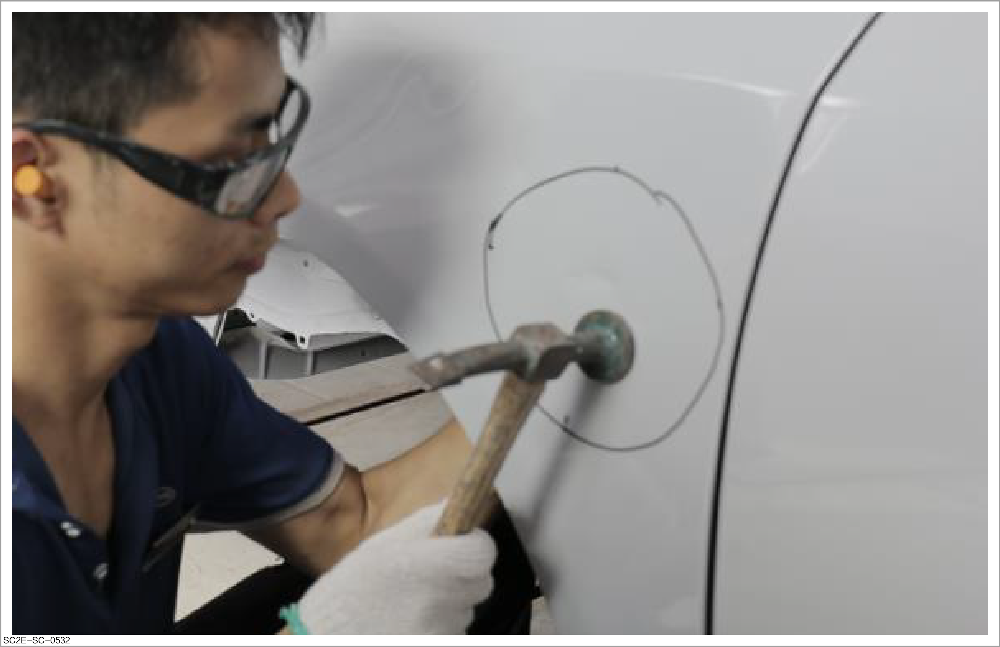
-
-
Grinding and finishing
CautionGrind the damaged area only. Never grind excessively.
-
Select a grinding tool and use appropriate sandpaper for grinding.
-
Follow the principle of minimizing the damaged area during grinding.
-
Carry out grinding from coarse to fine until the uneven traces disappear.
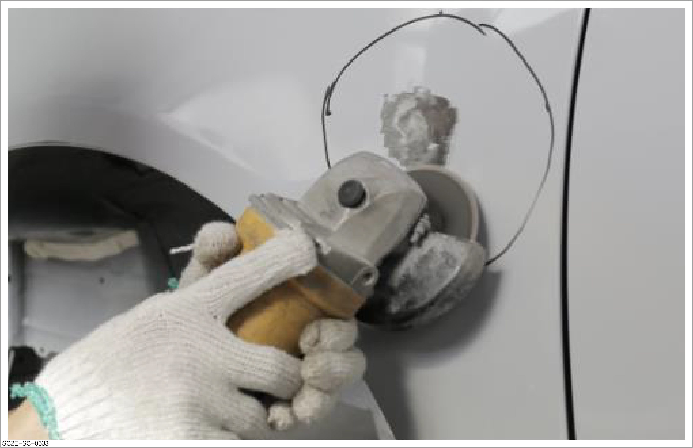
After repair and grinding, the contact edge between the bare metal and paint is linear, which is conducive to improving the efficiency of the next process.
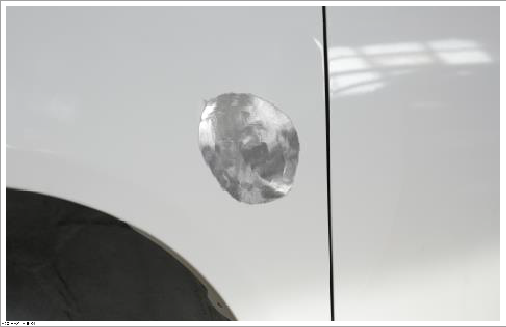
-
Repair with meson machine
-
Determine the damage. Refer to Damage determination
-
Use grinding tools and appropriate sandpaper to remove the old paint film and expose the steel panel.
Caution-
Please wear the correct protective equipment properly during operation. For details, please refer to Sheet metal protection
-
Never remove the paint film using the grinding tool that produces too large particles. The grinding surface with too large particles will lead to the thinning of metal plate and the strength decrease.
-
Only remove the paint film at the positions where the meson needs to be welded.
-
The width of paint film ground shall be that of the damaged area ± 10 mm.
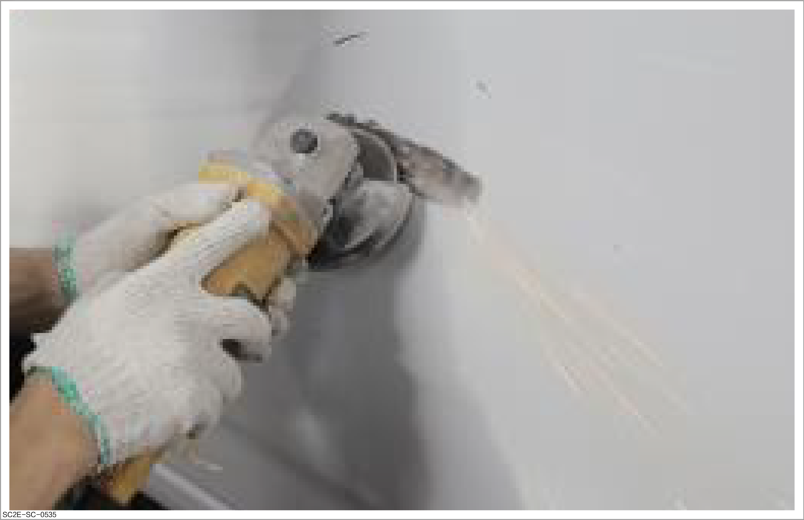
-
-
Adjust the meson machine to an appropriate power to prevent burning through the panel. The commissioning steps are as follows:
-
Select the working mode of meson machine.
-
Adjust the current of meson machine.
-
Carry out trial welding on sheet metals with the same material thickness.
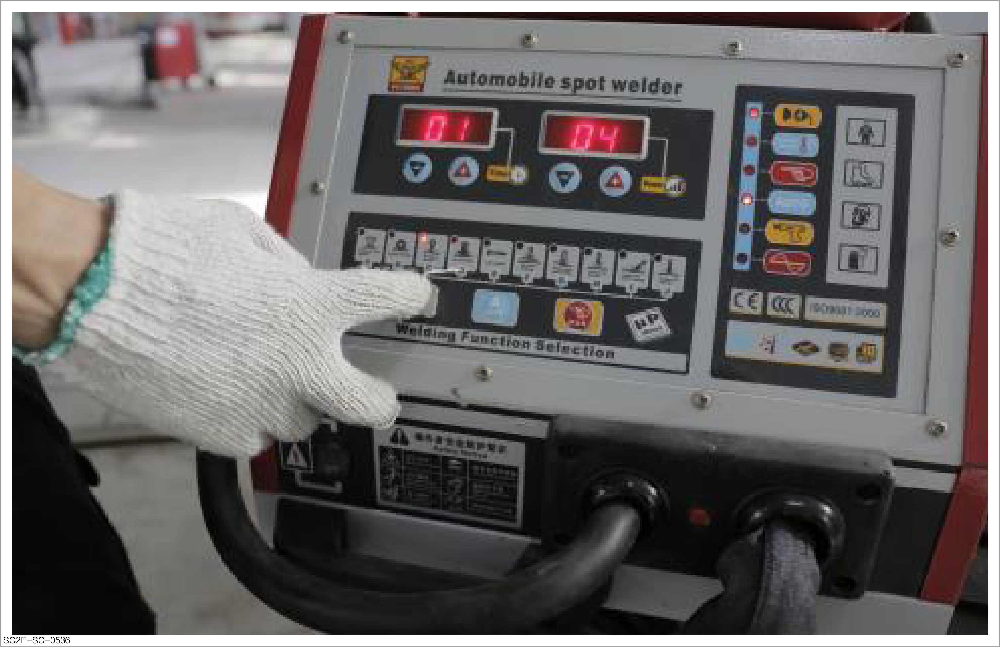
-
-
Weld a suitable meson to the concave and convex positions.
CautionCarry out trial welding before the meson is welded.
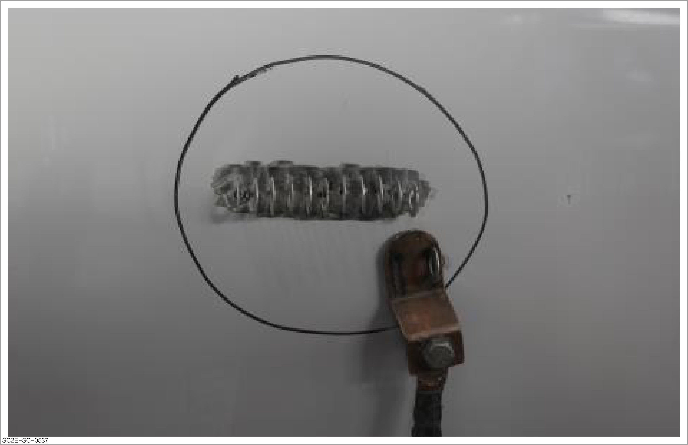
-
Carry out drawing repair so that the surface of the panel is slightly 0.5~1 mm lower than the original surface and there are no bulges or holes.
Reminder-
When drawing the dent on the vehicle body panel, hammer the bulge around due to extrusion with a sheet metal hammer.
-
Do not draw once to shape. Draw the panel surface by gradually increasing the force several times until it is restored to the height before deformation.
-
During drawing, use tools for measurement and inspection in time to prevent the surface from being too high due to over-drawing.
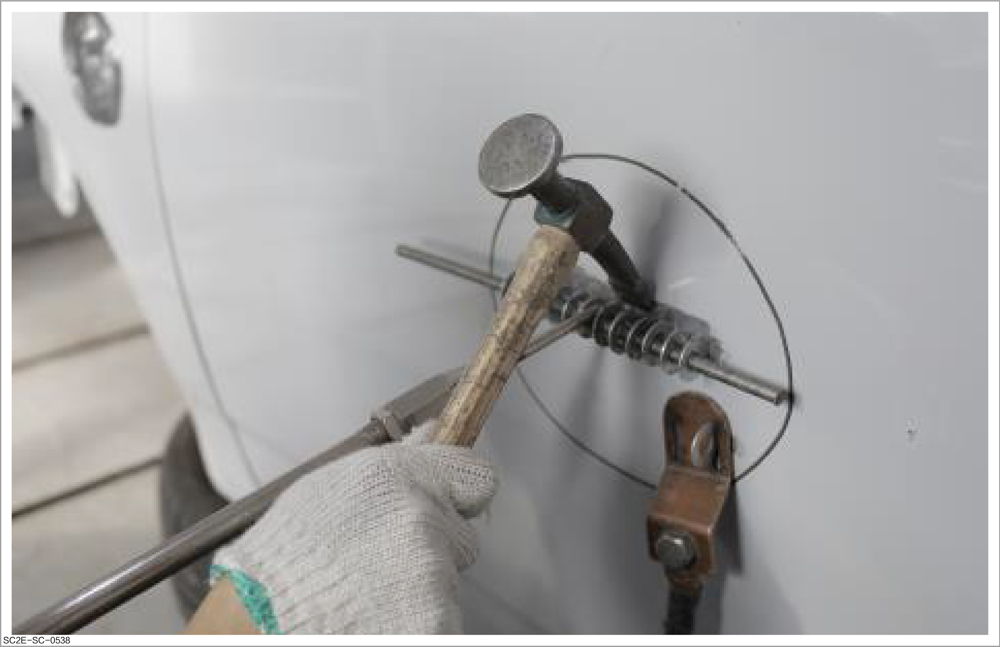
-
-
Repair the vehicle body ridge line.
Caution-
Knock the area around the pulled dents with a sheet metal hammer during drawing.
-
The ridge lines after repair shall be about 0.5 mm lower than the original edge lines.
-
Draw from inside to outside in principle, and avoid drawing from the location with the least serious deformation, resulting in excessive extension or bulges after steel panel drawing.
-
To repair large area of deformation, use a fixed pull tower to assist in drawing.
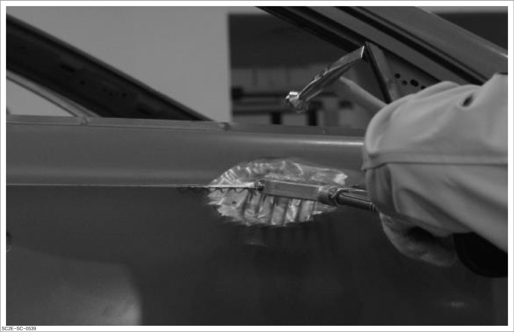
-
-
Trim welding marks.
CautionDo not grind sharp bulges with a grinder, because there is a risk that the steel panel will become thinner or be worn through.
Reminder-
Press the repaired surface with fingers to check its strength.
-
Shrinking is required in case of decrease in strength. Refer to Introduction to sheet shrinking process
-
Further drawing is required in case of any undesirable dents.
-
Grind the welding machine area with a suitable tool and sandpaper so that the welding marks disappear.
-
Finish the bulges with the tip of a finishing hammer.
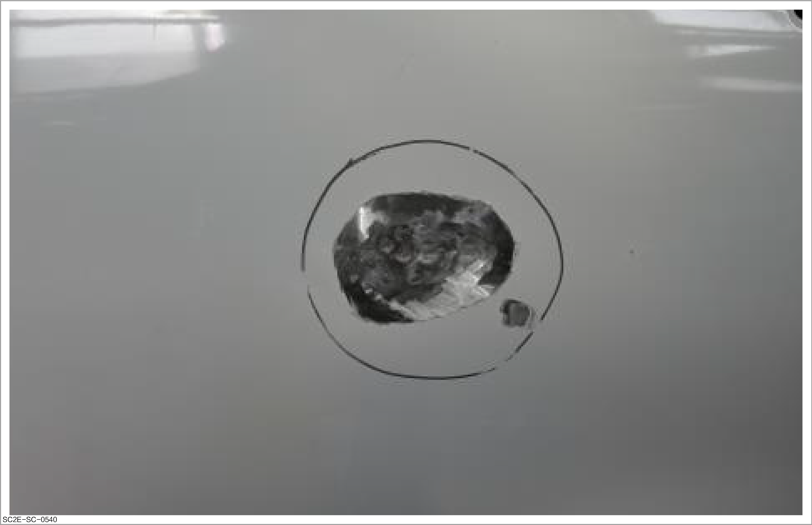
-
-
Carry out anti-corrosion treatment on the inner cavity. Refer to Anti-corrosion treatment
Caution-
The inner side of the ablated panel must be treated with anti-corrosion wax during welding with a meson machine.
-
For positions inaccessible, anti-corrosion wax can be sprayed by inserting a hose into the cavity.
-
The area with damaged sealant shall be treated and reapplied with sealant.
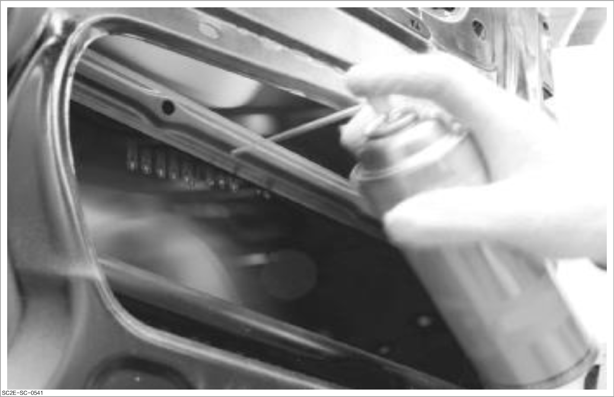
-